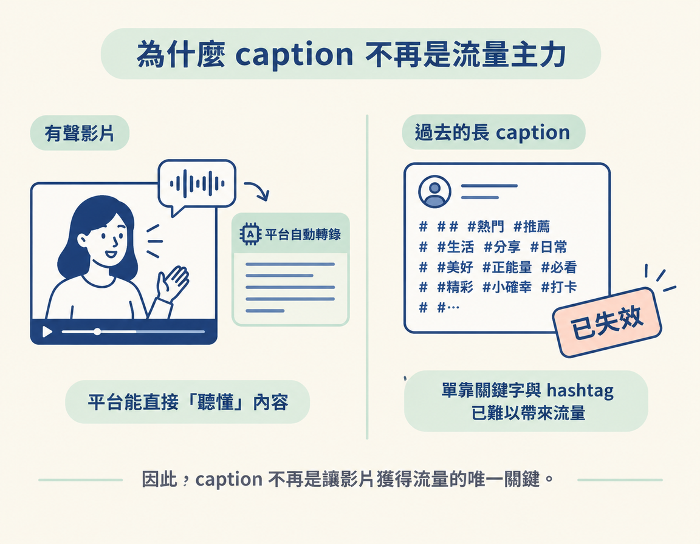
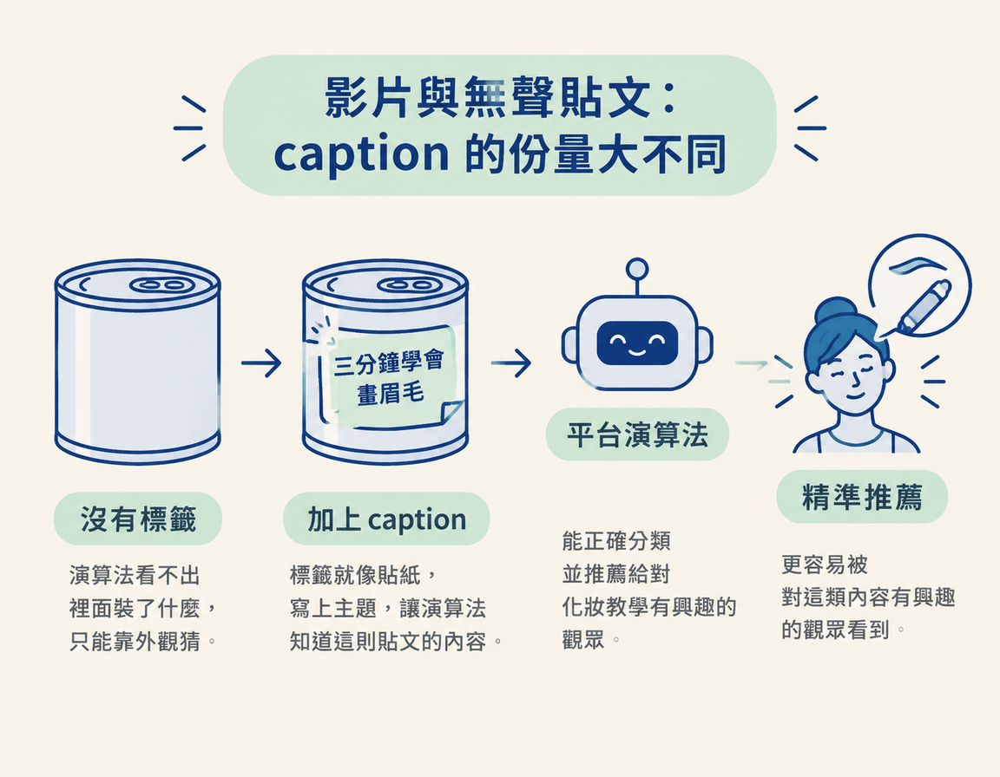

你會知道 caption 為什麼不再是決定觀看與觸及的關鍵，卻仍然值得認真寫。你也能分辨：照片與輪播沒有聲音時，為什麼 caption 是演算法唯一收到的文字。
正要發出第一則貼文，看到「撰寫說明文字」的欄位時，你可能會想：這段文字到底要寫什麼？它重要嗎？要像以前聽說的那樣塞滿關鍵字和 hashtag，還是隨手寫一句就好？
這一課會先看你發的是有聲影片，還是沒有聲音的照片與輪播，再判斷 caption 在其中算什麼。這樣做的目的，是讓你知道文字該花多少心思；最後，你就能分辨哪些貼文的 caption 只是加分，哪些貼文則需要靠它讓平台看懂內容。
答案這一兩年變了。過去常見的做法（caption 越長越好、關鍵字塞好塞滿、hashtag 越多越有曝光）現在多半已經失效。如果還照著那套寫，就像把力氣花在早已不是重點的地方。caption 不再是替影片帶流量的主力，但每則貼文幾乎都會帶著它；有些情況下，它甚至是你唯一能用文字向演算法說明內容的管道。
caption 是貼在內容底下的說明文字，有時平台會把它叫作「說明」或「描述」。你在影片下方看到的開場文字、在 Instagram 貼文底部按「更多」以前看到的幾行字，以及 YouTube 影片下方的描述欄，都算是 caption 的不同形式。
內容本身是影片、照片或輪播；caption 則是附在內容旁邊的文字。先分清這兩者，才看得懂它們在今天的份量為什麼不一樣。
社群平台這幾年進步很快，其中一個關鍵變化是：平台已經能聽懂影片裡的話。以 Instagram 為例，它可以直接辨認你說的內容，而且幾乎可以確定，每一則上傳到平台的內容都會被轉錄成文字。
也就是說，有旁白或對話的影片，平台早就聽得懂你講了什麼，不必只靠你手寫的 caption 判斷。caption 在這種情況下從「主力」退成了「加分」：寫了很好，少了它，平台通常還是聽得懂影片內容。
換句話說，caption 已經不是決定觀看數與觸及率的關鍵。這不表示它完全沒用，而是說，如果你寫 caption 的主要目的是替影片帶流量，結果可能不如預期，因為這件事早已不只靠 caption 完成。

caption 仍然值得討論，理由很簡單：你發的每則內容幾乎都會附上一段說明文字。既然它常常都在，就值得弄清楚它在不同情況下能做什麼，而不是隨手寫寫、浪費這個位置。
它的作用會隨貼文類型改變。這是判斷 caption 重要性的關鍵。
把貼文大致分成兩類，就能看出 caption 的重要性差在哪裡：
| 貼文類型 | 平台能不能「聽懂」內容 | caption 的角色 |
|---|---|---|
| 有聲音的影片（旁白、對話） | 能。平台會轉錄你說的話 | 加分項，不再是流量主力 |
| 照片、輪播（沒有聲音） | 不能。平台只能看到畫面和圖片裡的文字 | 演算法唯一收到的文字 |
差別就在第二類。照片和輪播沒有聲音，平台聽不到任何內容。這時 caption 是整則貼文唯一的文字，能補充資訊，讓演算法更快理解貼文在談什麼。
你可以把照片想成一罐沒有標籤的罐頭。演算法看不出裡面裝了什麼，只能靠外觀猜。caption 就像貼在罐頭上的標籤：寫上「三分鐘學會畫眉毛」，平台就能知道這則貼文談的是化妝教學，也更容易把它推給對這類內容有興趣的人。沒有標籤，再好的罐頭也不容易被正確分類。

所以，照片和輪播才是 caption 真正要做重活的地方。影片可以靠聲音裡說的內容讓平台理解；照片沒有嘴巴，caption 就是它唯一能開口的方式。
caption 是貼文底下的說明文字。平台已經能聽懂並轉錄影片內容，因此 caption 不再是帶來觀看與觸及的主力。但它幾乎每篇貼文都有；在照片與輪播這類沒有聲音的貼文上，caption 是演算法唯一收到的文字，能幫平台理解內容。影片貼文的 caption 是加分項，無聲貼文的 caption 則要負責傳達關鍵資訊。
如果 caption 不再是流量主力，為什麼還值得花心思寫？答案和平台近年的另一個轉變有關：它們越來越像搜尋引擎。下一節會說明，caption 如何從貼文上的說明文字，變成讓內容「被找到」的管道。
Instagram 官方對內容排序的說明（Instagram Ranking Explained）：about.instagram.com。官方列出的排序訊號裡並沒有 hashtag。